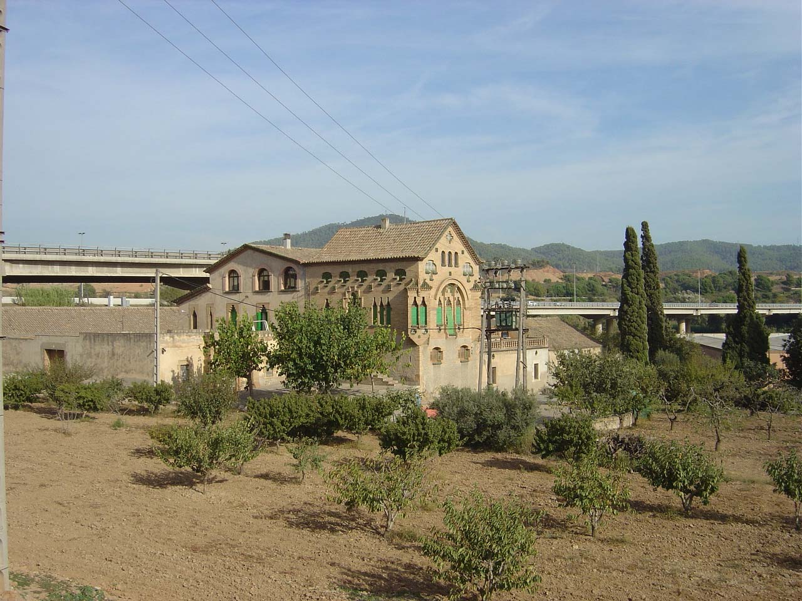
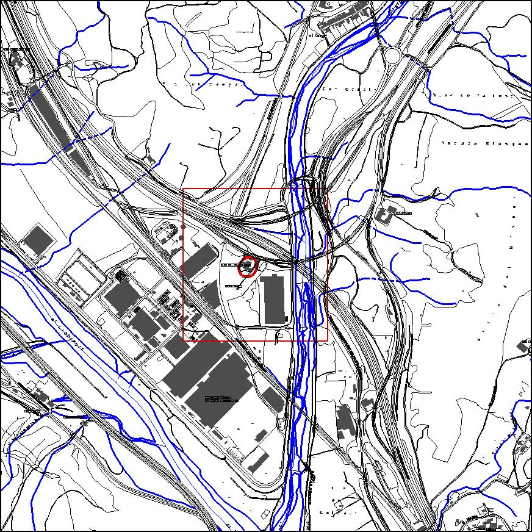

|  |  |
Nom de l’element: Vila Romana Can Pedrerol de Baix
Clau d’identificació: D.10
Can Pedrerol de Baix
UTM: X= 416.008, Y= 4.588.953
Règim del sòl: sòl urbà
1.1 Època de construcció i tipologia:
A la zona on està la masia de Can Pedrerol de Baix s’hi van trobar restes d’un taller romà d’àmfores d’uns 2000 anys d’antiguitat, que utilitzaven per transportar vi pel riu. Hi havia hagut una vila romana dedicada a l’explotació agrícola i a l’exportació de cereals, oli i vi. En aquesta vila hi havia un forn d’obra, on es coïen els pesos, les llumeneres i les àmfores, les quals es marcaven amb lletres, senyal que ha permès identificar-les. Una àmfora sencera decora l’entrada de la masia, i al jardí d’aquesta es poden observar els basaments de dues columnes desenterrades a la finca.
1.2. Estat de conservació:
Cal dur a terme una campanya arqueològica per valorar les restes existents i el seu estat de conservació
1.3. Ús actual:
Històric-cultural (jaciment arqueològic).
1.4. Accés:
Accés des de la carretera B-225, trencall pel c. Metal·lúrgia i camí de terra.
3.1. Usos admesos:
Espais lliures, recreatiu cultural.
3.2. Condicions d’ordenació:
Segons Pla Especial a redactar.
3.3. Accés
Accés des de la carretera B-225, trencall pel c. Metal·lúrgia i camí de terra.
BPU (Bé Protegit Urbanísticament)